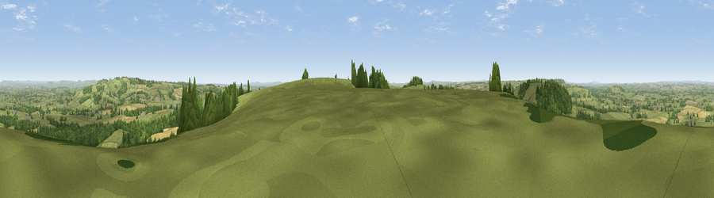

Viewpoint near Plush
#5162 in England · top 14% of its area beats it · near Plush · path 183 mWhere it is
The exact computed spot (ST 73625 03388). Click the marker for map links.
Public access: the nearest public right of way is about 183 m away — the final stretch may cross private land. Computed from Natural England's CRoW access layer and OpenStreetMap rights of way — not the legal definitive map. Always verify locally.
The view, rendered

A 360° render of this exact spot computed from the terrain model, tree cover and land cover — summer colours, afternoon light, calibrated against photographs of famous viewpoints. Real trees, hedges and buildings will differ in detail.
The panorama
Grey silhouette: terrain skyline in each direction (720 bearings, Earth curvature and refraction included). Dashed green: skyline with trees (+15 m) and buildings (+8 m) as obstacles. Blue strip: how far the ground is visible on each bearing.
Where the view opens
Wedge length = distance to the farthest visible ground on that bearing (vegetation-aware). Rings at 10, 25 and 50 km.
What fills the view
65% grassland · 19% woodland · 15% cropland · 1% built-up
Angular shares of the visible panorama (visual magnitude), not map area. Landscape diversity 0.41 (0–1 Shannon).
Key numbers
More beautiful places nearby
The staircase of upgrades: each row has a higher view potential than everything closer. Driving times are estimates from straight-line distance, calibrated against real road routing — check an actual route before setting out.
| Place | Direction | Drive | Score |
|---|---|---|---|
| Viewpoint near Melcombe Bingham | ESE · 1 km | ~4 min | 70.5 |
| Viewpoint near Woolland | NE · 4 km | ~10 min | 74.5 |
| Viewpoint near Upwey | SSW · 18 km | ~32 min | 77.6 |
| Bincombe Down | SSW · 19 km | ~32 min | 78.6 |
| East Hill | S · 19 km | ~32 min | 79.6 |
| Viewpoint near Sutton Poyntz | SSW · 19 km | ~33 min | 79.9 |
| Viewpoint near Portesham | SW · 20 km | ~34 min | 82.7 |
| Viewpoint near Chaldon Herring | S · 22 km | ~37 min | 82.9 |
50.82942, -2.37586 · source: screening · position refined by local search. Computed location — check access rights before visiting.